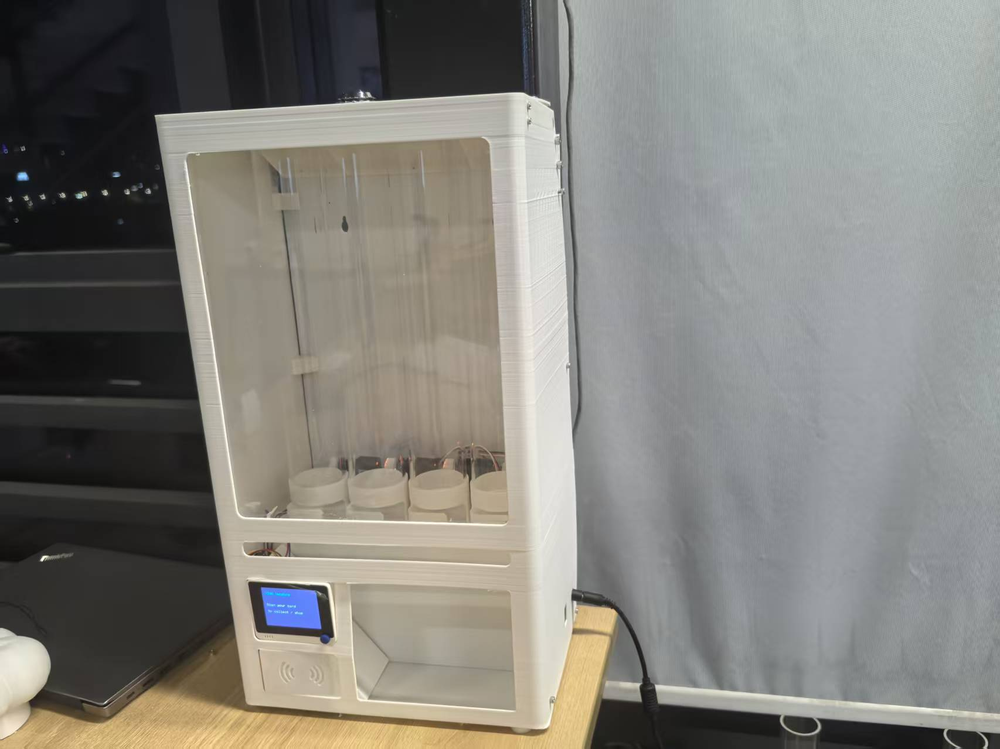

XIAO as the common starting point
A familiar board family on every lab’s shelf, ready for the next idea. XIAO is the default vending product; the prototype is controlled by Wio Terminal.
OPEN CALL / DESIGN VERSION ONE
Start with XIAO. Vend what you make.
Share how you made it.
An open-source machine for local makers, backed by Seeed Studio. Help turn our working prototype into a first edition that labs everywhere can build, adapt, and use.
AN INITIATIVE BACKED BY Seeed Studio

V0 / WORKING REFERENCE01 / THE SHARED IDEA
Put useful things within reach. Give local work a place to be discovered. Let every improvement travel further than one workshop.
A familiar board family on every lab’s shelf, ready for the next idea. XIAO is the default vending product; the prototype is controlled by Wio Terminal.
Labs choose what else to vend: components, kits, and things they make. Help design the modules that make those choices possible.
Build on shared source files. Publish reusable changes and what you learn, so the next lab can start with a better machine.
02 / THE OPEN DESIGN BRIEF
You don’t need a finished machine to contribute.
A sketch, a test, or a well-documented idea can move Version One forward.
Different products. One adaptable machine.
Bring a mechanism sketch, product dimensions, and a simple dispense test.
XIAO first. Your local catalog next.
Propose a refillable product module with CAD, capacity, and compatibility notes.
A better experience on both sides.
Share an interface flow for choosing, collecting, or managing products.
Easy to build. Easy to keep running.
Test a weak point. Document the fix, cost, and repeatable assembly steps.
Just a first idea? Share a sketch or suggestion. For a detailed proposal, use a design lane above. A GitHub account is needed.
See all contribution tasks ↗03 / THE STARTING POINT
Version Zero already dispenses. Use its CAD, firmware, and build notes as material for the next iteration.
Four dispensing columns. RFID cards. Two Wio Terminals. An operator dashboard for orders, inventory, and configuration. Built at Chaihuo Fab Lab.
Inspect the interactive 3D buildRead the assembly guideExplore the source code04 / THE ROAD AHEAD
One shared release, shaped by the people who will use it.
Contribute ideas, test the reference, and improve the design for everyday lab use.
Bring the design, parts, documentation, and lessons together into the first product release.
Labs can apply after launch. Seeed Studio support and participation details will be published before applications open.
Register early interest ↗A FEW PRACTICAL QUESTIONS
XIAO is the default starting point. Add suitable electronics, learning kits, and products made by your lab. Product size and dispensing compatibility should inform the machine design.
The machine is built on an open-source foundation. Share reusable designs, machine modifications, source files, and build notes back with the community. Version One participation and licensing terms will be published with the release.
Lab applications follow the Version One launch. Today you can contribute to the design or register your lab’s interest on GitHub. Registering interest is not an application or an allocation.
Seeed Studio backs the vision and provides the open reference as a starting point. The goal is to support the shared design and future rollout to labs. Supply arrangements, eligibility, and support terms will be published before applications open.
MAKE THE NEXT VERSION POSSIBLE